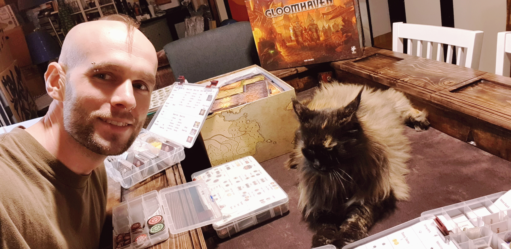

CV
Last update August 2023Bio
EDUCATION & WORK
Christian currently lives in Stockholm, Sweden, and has a MSc in Computer Science specializing in Interactive Media Technology (i.e. human-computer interaction) from the Royal Institute of Technology (KTH).
He graduated with a BSc in Computer and Systems Science from Stockholm University specializing in Game Development.
Before embarking on his bachelor's studies, Christian spent a solid decade as a dedicated full-time soldier and skilled vehicle mechanic in the esteemed ranks of the Swedish Armed Forces. This experience wasn't just a job; it was a profound journey of discipline, personal growth, and a masterclass in all things related to vehicle mechanics, teamwork, and leadership.
Pondering his future career path, Christian made the decision to pivot back to his passion for games and technology. In 2020, he rekindled his academic pursuits in Computer Science and Game Development. Graduating with a bachelor of science in 2021 and a master of science in 2023.
In 2024 he began working for the Swedish Defence Research Agency, where he contributes with research and development of combat flight simulation. Work duties include implementing XR technology using gaming engines, and contributing to human studies on the use of XR for combat flight simulation training.
Christian's journey continues to evolve, with a fusion of his military discipline and expertise in the dynamic field of interactive media.
WHO AM I?

Me and Lola! =^.^=I'm a self-proclaimed nerd with a strong interest in gaming, technology, fantasy, and science fiction. My interests span gaming and game development/design as well as exercising at the gym. I also enjoy Dungeons & Dragons and enjoy taking on the role of Dungeon Master, creating stories and experiences for my fellow players.
Academically, I'm especially interested in Human-Computer Interaction, including user experience, user research, and user motivation. I enjoy exploring how people engage with technology and how thoughtful design can make those interactions more intuitive, meaningful, and enjoyable.
During my undergraduate studies, I focused primarily on programming and game development. My master's degree introduced me to a broader range of design challenges and research methods, helping me appreciate problem solving within Human-Computer Interaction. Since then, I've enjoyed combining technical skills with design thinking and research to create solutions that keep users' needs in focus.
I would describe myself as ambitious, creative, and disciplined. I enjoy taking on new challenges and I work well both in small, collaborative teams and also working independently, where I can focus deeply on solving a problem.
Whether I'm working on a technical challenge, exploring a design problem, or conducting research, I'm motivated by opportunities to learn and create something useful.
And, finally, I'm a big lover of cats. =^_^=
Feel free to contact me below!